How to read this journal
- Turn a page with the → and ← keys, by clicking the right or left page, or with the arrows below the book.
- On a phone, swipe left and right.
- Jump to a chapter from the Contents on the facing page.
- Download the CV at any time from the button below the book.
Every fact in these pages is taken from my academic record, publications and certificates. Photographs are from my own collection.
© 2026 Gurpreet Singh
Text current as of November 2026
Set in Cormorant Garamond and EB Garamond
Read the whole story before you judge the chapter.
Contents
- Preface
- Voices for the Hard Chapters
- IBeginnings — India
- IIFour Years in Daejeon
- IIIA Scholar's Journey to Japan
- Interlude — Graduation, 2025
- IVSerdang, Malaysia
- VHearing What Images Show
- VIPublications
- VIIHonours and Awards
- VIIIService and Teaching
- Appendix — Skills and Languages
- Places in this Journal
- Colophon and Correspondence
Know where you're going before anyone asks.
Preface
If you look at a photograph of a shoreline, a forest or a busy street, you can almost hear it. My research asks whether a machine can learn to do the same: to look at a single image and produce the sound or music that belongs to it.
This journal collects the five years that led me to that question. It begins in India, continues through four years of study in Daejeon, South Korea, and a scholarship journey to Japan, and arrives at Universiti Putra Malaysia, where I am now a Master of Science (by Research) student in computer science.
The chapters follow the places in order. Photographs appear as plates between them, and the papers I have written are gathered in a bibliography near the end. You can read it from cover to cover, as it was written, or jump to any chapter from the contents.
— Gurpreet Singh
Serdang, November 2026
I don't wait for the perfect moment. I make the moment perfect.
At a glance
- 4
- peer-reviewed papers in 2026, all as first author
- Best Paper
- IEEE Symposium on Computers & Informatics (ISCI 2026), Kuala Lumpur
- 3.94 / 4.50
- BSc in Data Science, Woosong University — First Class with Distinction
- Winning team
- Young Leaders in Project competition, Xiamen University, China, 2026
- SIGGRAPH Asia
- Selected Student Volunteer, Kuala Lumpur, December 2026
Research interests: multimodal generative AI, cross-modal representation learning, latent diffusion for audio and music, vision–language models, and the evaluation of multimodal foundation models.
Let results do the talking — and give them plenty to say.
Voices for the Hard Chapters
When a chapter turns hard, I read these six. Each wrote through prison, illness, heartbreak or neglect — and the work outlived the sadness.
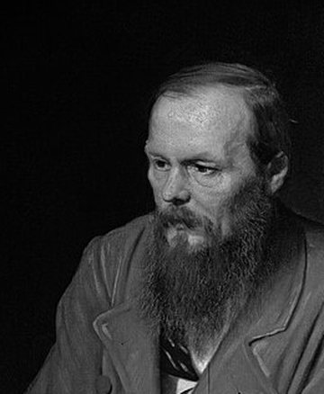
“Pain and suffering are always inevitable for a large intelligence and a deep heart.”
Fyodor Dostoevsky, 1821–1881 · Crime and Punishment
Faced a mock execution in 1849, then four years of hard labour in Siberia.
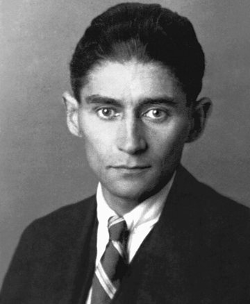
“A cage went in search of a bird.”
Franz Kafka, 1883–1924 · Zürau Aphorisms
Asked his friend Max Brod to burn his unpublished work; died of tuberculosis at forty.
“Here lies one whose name was writ in water.”
John Keats, 1795–1821 · his chosen epitaph
Died in Rome at twenty-five, convinced his poetry would be forgotten.
Sadness is a chapter, not the book.
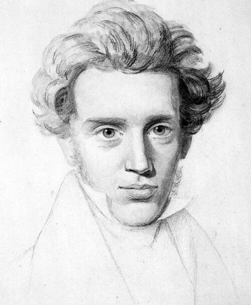
“Life can only be understood backwards; but it must be lived forwards.”
Søren Kierkegaard, 1813–1855 · Journals, 1843
Broke off his engagement to Regine Olsen, the love of his life, and died at forty-two.
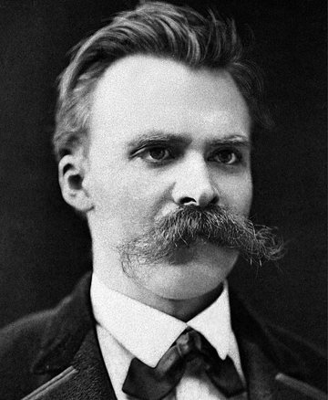
“He who has a why to live can bear almost any how.”
Friedrich Nietzsche, 1844–1900 · Twilight of the Idols
Collapsed in Turin in 1889 and spent his last eleven years unable to write.
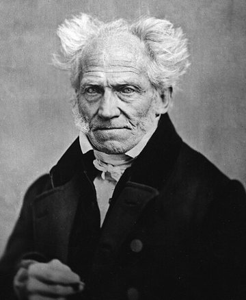
“Life swings like a pendulum backward and forward between pain and boredom.”
Arthur Schopenhauer, 1788–1860 · The World as Will and Representation
His masterwork was ignored for over thirty years; recognition came only in his final decade.
Their sadness was real, and so was what they made of it.
This time shall pass too.
Great minds lost things too. What they built next is the story.
Chapter I
Beginnings — India
Before machine learning, there was security: learning how systems fail.
My first serious study of computing was on the defensive side. Between 2018 and 2020 I completed a two-year Certification in Advanced Cybersecurity at CyberX Technologies in India, learning networking, system security, ethical hacking and digital forensics.
- 2011All India Rank 1187 in the Unified Cyber Olympiad (UCO), a national computer and information-technology olympiad.
- 2018–20Certification in Advanced Cybersecurity (CACS), CyberX Technologies — a two-year diploma.
- 2021–22Invited guest lecture on cybersecurity for undergraduate students at the Jaypee Institute of Information Technology (JIIT), recorded in the JIIT Annual Report 2021–22.
Learn how things break before you try to build them.
Chapter II
Four Years in Daejeon
Woosong University, South Korea · 2021 – 2025
In February 2021 I began a Bachelor of Science at the Endicott College of International Studies, Woosong University, majoring in Data Science in the Department of Future Technologies, with a minor in the Future Technology Management Convergence Track.
I graduated in February 2025 with First Class with Distinction and a cumulative GPA of 3.94 out of 4.50. A merit scholarship supported every semester of the degree — 50% each term, rising to 70% in one. The courses I enjoyed most, and earned A+ in, were Generative AI, Essential Mathematics for AI, AI and Digital Forensics, Algorithms and Cybersecurity.
My final-year capstone project ranked first among 300 students.
Talent opens the door. Discipline keeps it open.
Beyond the classroom
From 2021 to 2024 I was president and instructor of the university's Cybersecurity Club, which grew to more than a hundred students from many countries. I taught its workshops on networking fundamentals, ethical hacking and network defence. I also served as a Resident Assistant at SolBridge International School of Business.
Industry projects
- SeAH Steel Industries, Seoul · 2024 — a computer-vision and OCR system that reads steel-bundle IDs on a moving conveyor, coping with tilted rods, occlusion and motion blur. Capstone Project Completion Award.
- Netvision Telecom, Daejeon · 2024 — a CNN-based waste-classification system.
- Daejeon University & Chungnam National University hackathon · 2024 — team lead for a three-day prototype of a regional food-ordering service.
Also in Korea: Cybersecurity Club President Award, LINC 3.0 Participation Award and recognition from the Daejeon Integrated Support Centre for Foreign Residents (2024); an award at the UCLG World Congress, Daejeon (2022).
Lead when nobody asks you to. That's when it counts.
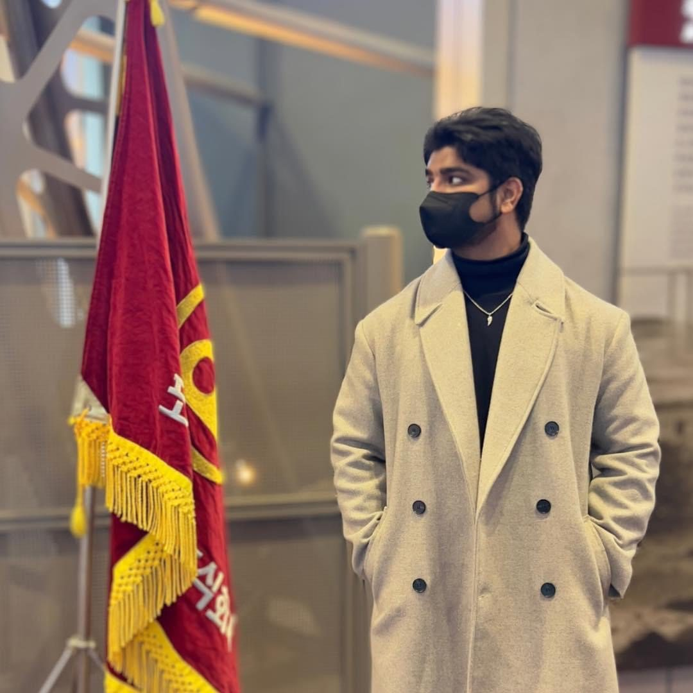
Go where you're a stranger. That's where you grow.
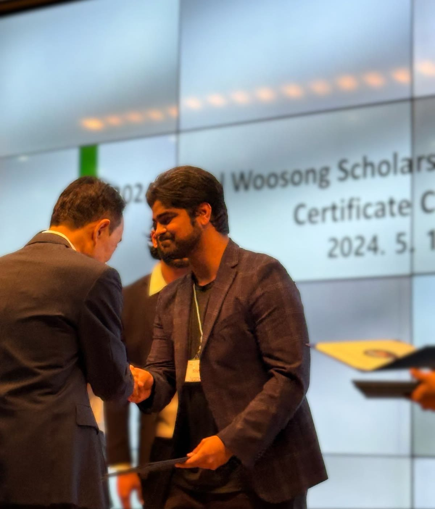
Being selected is good. Deserving it every day is better.
Chapter III
A Scholar's Journey to Japan
Fukuoka and Osaka · 2024
In 2024 I was named a Woosong Foundation Scholar, one of thirty students chosen from across the university for a fully funded programme in Fukuoka and Osaka. The photographs in this chapter come from that visit.
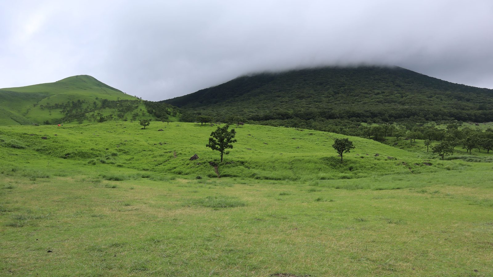
Opportunity doesn't knock twice. Answer — and dress for it.
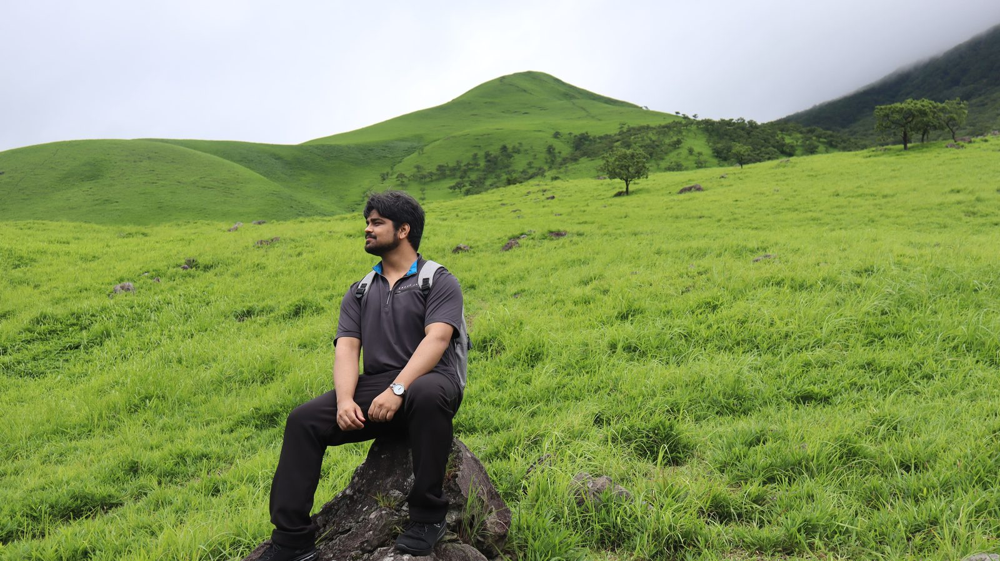
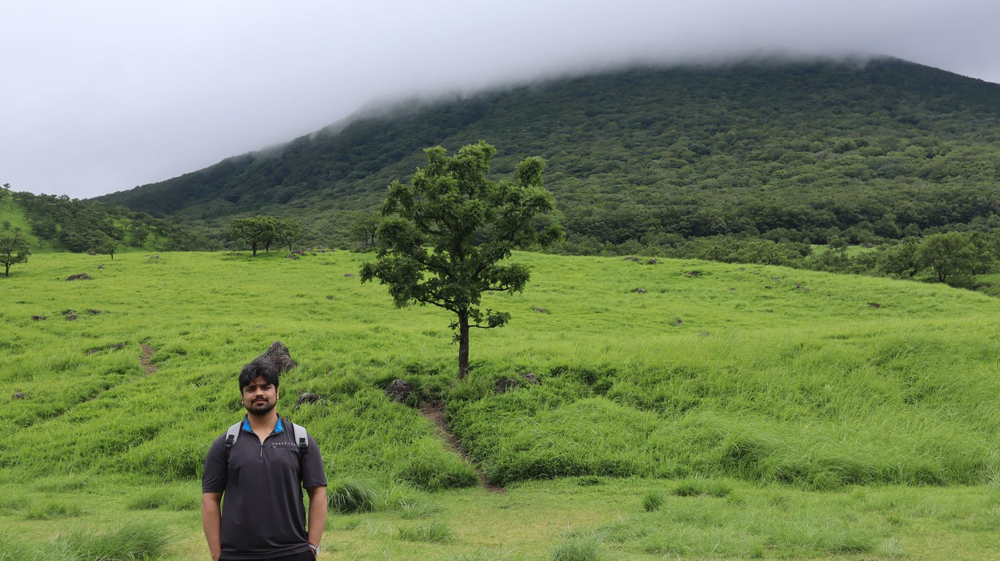
Stand still long enough to see how far you've come.
Interlude — Graduation, 2025
In February 2025 I graduated from Woosong University with a Bachelor of Science in Data Science, First Class with Distinction.
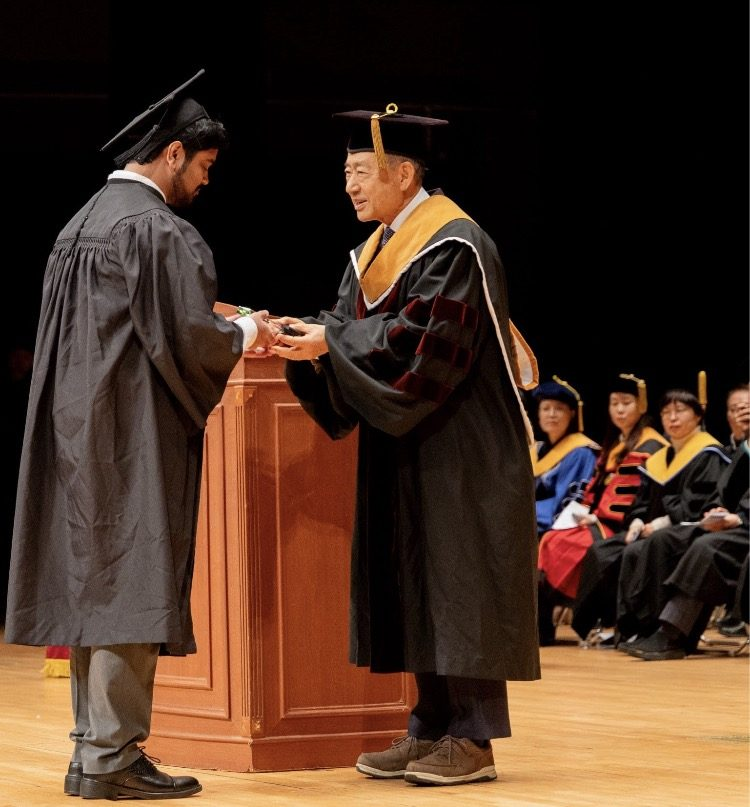
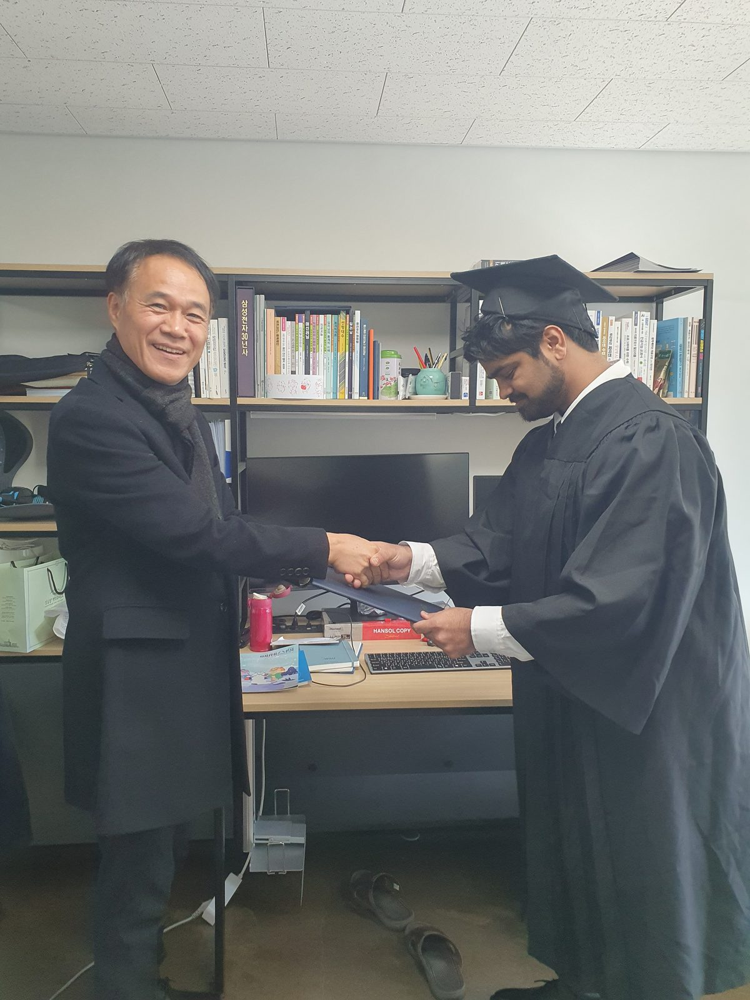
A degree is a receipt. What you do with it is the investment.
Chapter IV
Serdang, Malaysia
Universiti Putra Malaysia · 2026 –
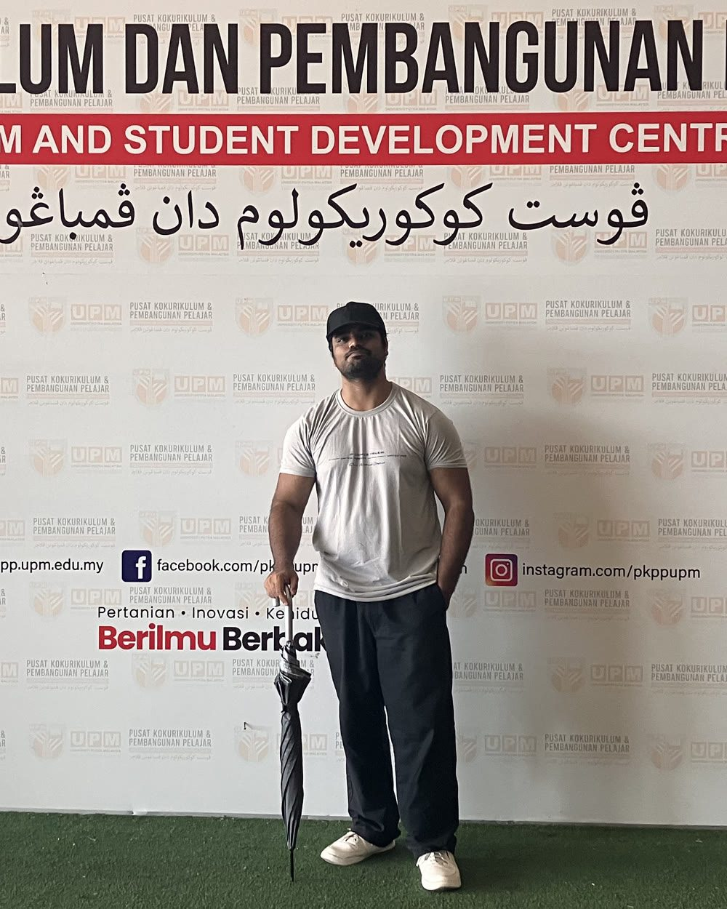
In March 2026 I began a Master of Science (by Research) in Computer Science at the Faculty of Computer Science and Information Technology, Universiti Putra Malaysia, supervised by Ts. Dr. Siti Khadijah Ali.
My thesis, in the field of computer graphics, is on cross-modal generation: producing audio and music from still images with latent diffusion. I expect to complete it in March 2028.
Within the first year came the IEEE ISCI 2026 Best Paper Award in Kuala Lumpur, and a place as a student volunteer at SIGGRAPH Asia 2026 in the same city.
Change the city if you must. Never change the standard.
Chapter V
Hearing What Images Show
From a single picture to a minute of sound
LongSoundscape · Best Paper Award, IEEE ISCI 2026
Most image-to-audio models stop at about ten seconds, because they are trained on short windows. LongSoundscape reaches 30 to 60 seconds without retraining. CLIP identifies the main sound source in an image, a planner lays out overlapping segments that each describe a variation of that sound, AudioLDM generates every segment, and cosine crossfades join them into one continuous soundscape — three to six times the usual length.
With Ts. Dr. Siti Khadijah Ali. Proceedings of the IEEE Symposium on Computers & Informatics, Kuala Lumpur, 2026.
Don't settle for ten seconds when the world deserves a minute.
SC-M2U · music from the layout of an image
SC-M2U encodes the foreground and the background of an image separately and routes each through gated cross-modal attention to its own music stem: the foreground shapes the melody, the background the accompaniment. Region-aware conditioning beat a single global embedding, though only by a small margin — a result that pushes me towards models whose representations are learned, not just assembled.
Reading the whole field
Alongside the systems, I write systematic reviews that follow the PRISMA 2020 method, with reproducible search and screening pipelines in Python:
- 215 studies on unified models that understand and generate images, video and speech;
- 238 studies on text-to-comic and manga generation;
- 176 studies on multimodality in cybersecurity (manuscript).
Their clearest lesson: results across papers are often not comparable, and key comparisons rarely report variance.
Small result? Say so. Honesty is a competitive advantage.
Chapter VI
Publications
- J3G. Singh, “Unified Multimodal Foundation Models Across Vision, Speech, and Language: A Systematic Review,” Quillstone Journal of Multidisciplinary Research, 2026. Accepted, in press.
- J2G. Singh, “Text-to-Comic and Manga Generation: A Systematic Review of Methods, Datasets and Evaluation, 2020–2026,” ReCIBE, Universidad de Guadalajara, 2026. Accepted, in press.
- J1G. Singh, “SC-M2U: Mapping Spatial Composition in Images to Multi-Track Music Through Cross-Modal Gated Alignment,” ICTACT Journal on Image and Video Processing, 17(1), 4034–4041, 2026. doi:10.21917/ijivp.2026.0564
- C1G. Singh and S. K. Ali, “LongSoundscape: Hierarchical Image-to-Long-Audio Generation Using Segment-Wise Latent Diffusion,” Proc. IEEE Symposium on Computers & Informatics (ISCI 2026), Kuala Lumpur, 2026. Best Paper Award.
Full list on Google Scholar · ORCID
Ideas are cheap. Published work is the currency.
Chapter VII
Honours and Awards
- 2026Best Paper Award, IEEE Symposium on Computers & Informatics (ISCI 2026), Kuala Lumpur.
- 2026Winning team, Young Leaders in Project competition, Xiamen University, China.
- 2024Woosong Foundation Scholar — one of thirty students selected university-wide for a funded programme in Japan.
- 2024First Place, Final-Year Capstone Project, Woosong University (first of 300).
- 2021–25Academic Merit Scholarship, Woosong University, every semester.
- 2024Cybersecurity Club President Award · SeAH Steel Capstone Completion Award · LINC 3.0 Participation Award.
- 2022Award, UCLG World Congress, Daejeon.
- 2011All India Rank 1187, Unified Cyber Olympiad.
Win quietly. Let the record make the noise.
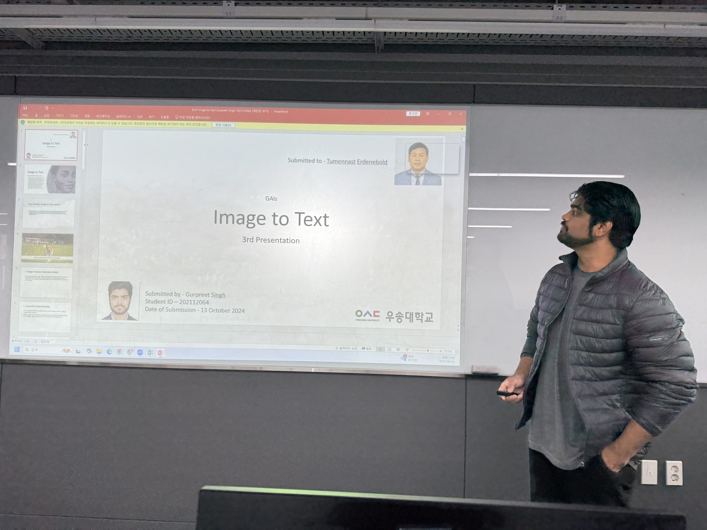
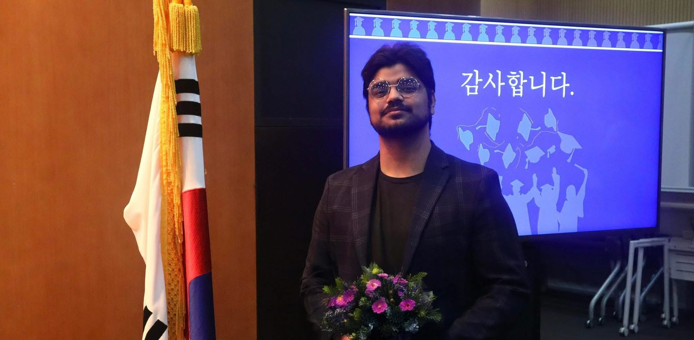
Explain it simply, or you haven't won the argument.
Chapter VIII
Service and Teaching
- Student Volunteer, SIGGRAPH Asia 2026 · 30 Nov – 4 Dec 2026
ACM SIGGRAPH Conference and Exhibition on Computer Graphics and Interactive Techniques in Asia, Kuala Lumpur Convention Centre. - President and Instructor, Cybersecurity Club · 2021 – 2024
Woosong University; workshops on networking, ethical hacking and network defence. - Invited Guest Lecturer · 2021 – 2022
Jaypee Institute of Information Technology, India — cybersecurity for undergraduates. - Resident Assistant · 2021 – 2022
SolBridge International School of Business, Daejeon.
Conferences attended
IEEE ISCI 2026, Kuala Lumpur (author and presenter) · SECON International, 4th Annual ISC2 Chapter Conference, 2025 · The European AI Conference, 2025 · International Conference on Platform and AI Society in Asia.
Show up for the work nobody notices. Someone always does.
Appendix — Skills and Languages
- Research
- Multimodal generative AI, latent diffusion (AudioLDM), vision–language models (CLIP), cross-modal attention, computer vision and OCR, systematic reviews (PRISMA 2020).
- Programming
- Python, R, SQL, JavaScript.
- Machine learning
- PyTorch, TensorFlow, Keras, Hugging Face, OpenCV.
- Tools
- Git, Docker, Linux, LaTeX, Google Cloud, AWS, Zotero.
- Security
- Networking, system security, ethical hacking, digital forensics.
- Languages
- English (fluent; TOEIC 915/990) · Hindi and Punjabi (native) · Korean (intermediate) · Bahasa Malaysia (basic).
- Certificates
- Advanced Cybersecurity (CACS, two-year diploma) · Scrum Foundation Professional (CertiProf) · Introduction to Cybersecurity (Cisco) · Blockchain Essentials (IBM).
- Industry
- SeAH Steel Industries (2024) · Netvision Telecom (2024) · Mentorness, NLP remote intern (2024).
Skills are what you have. Character is how you use them.
Places in this Journal
- Indiabeginnings · cybersecurity diploma · JIIT lecture
- South KoreaDaejeon and Seoul · BSc, 2021–2025
- JapanFukuoka and Osaka · Woosong Foundation Scholar, 2024
- MalaysiaSerdang and Kuala Lumpur · MSc by Research, 2026–
- ChinaXiamen University · Young Leaders in Project, 2026
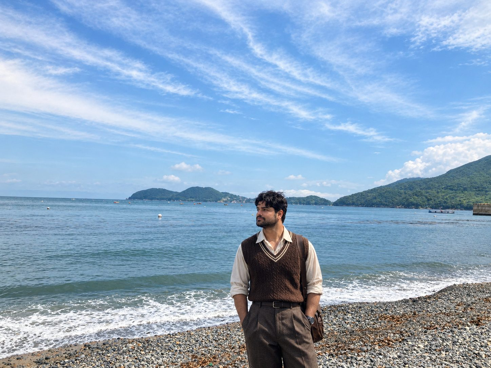
Home is wherever the work is worth doing.
Correspondence
I am glad to hear from researchers, labs and programmes working on multimodal generation, audio, vision–language models or their evaluation.
- Emailgs75240@student.upm.edu.my
- ORCID0000-0003-3584-1283
- ScholarGoogle Scholar profile
- AddressFaculty of Computer Science and Information Technology, Universiti Putra Malaysia, 43400 UPM Serdang, Selangor, Malaysia
Colophon — set in Cormorant Garamond and EB Garamond; last revised November 2026. Portraits of Dostoevsky, Kafka, Keats, Kierkegaard, Nietzsche and Schopenhauer are in the public domain (Wikimedia Commons).
Don't wait for the right door. Knock on the nearest one.